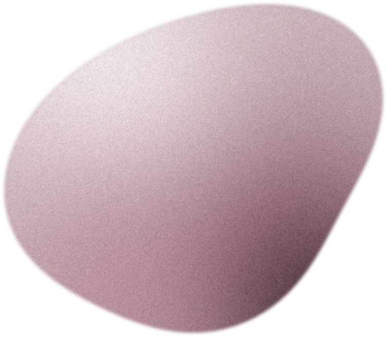

Sevilla · sus primeras 5 semanas
60citas puestas en la agenda
«Julen se preocupa en todo momento y está pendiente de todos los detalles. Se interesa e involucra por solucionar cualquier inconveniente que surja. Lo recomiendo 100%.»
- 402mensajes con la clínica cerrada
- 1.605 €en sesiones agendadas